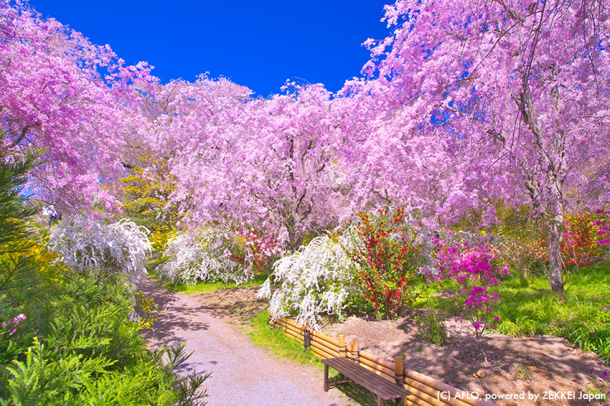
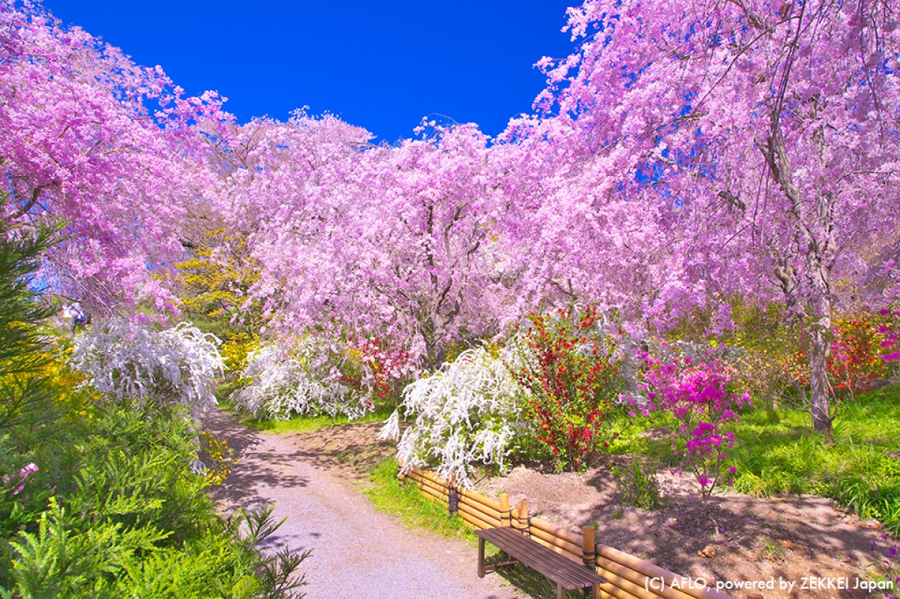

福岡県内の町や村から、自慢の特産品・農産物・加工品など、おいしいものが大集合！
福岡の各町村自慢のグルメ・特産品・農産物・加工品が一堂に集合！
町村によるご当地ステージイベントも同時開催！
会場の中央ステージでは、郷土の伝統芸能や音楽の披露のほか、アイドルと地元タレントによるステージやブースリポートで町村の魅力をアピールします。人気アイドル「パピマシェ」「パピロジェ」のスペシャルライブも！
その他にもアウトドアワークショップや町村めぐりダーツ、町村印ラリーなど楽しいコーナーがいっぱい！
 同時開催！「海外福岡県人会フェア」
世界の料理や踊り、音楽を楽しもう！
南米を中心とした各国の料理や物産を販売！特設ステージではサンバやコロンビアの伝統的な踊りを披露！
同時開催！「海外福岡県人会フェア」
世界の料理や踊り、音楽を楽しもう！
南米を中心とした各国の料理や物産を販売！特設ステージではサンバやコロンビアの伝統的な踊りを披露！
 福岡市のほぼ中央に位置する公園で「日本さくら名所100選」に選ばれている場所。春には約1300本の桜が咲き誇り、多くの花見客でにぎわう。また、園内の展望広場からは博多湾や能古島、志賀島を望むことができる。花見期間中交通規制あり、車両進入不可。
まつり期間中は19時から21時までライトアップされる

福岡市のほぼ中央に位置する公園で「日本さくら名所100選」に選ばれている場所。春には約1300本の桜が咲き誇り、多くの花見客でにぎわう。また、園内の展望広場からは博多湾や能古島、志賀島を望むことができる。花見期間中交通規制あり、車両進入不可。
まつり期間中は19時から21時までライトアップされる
